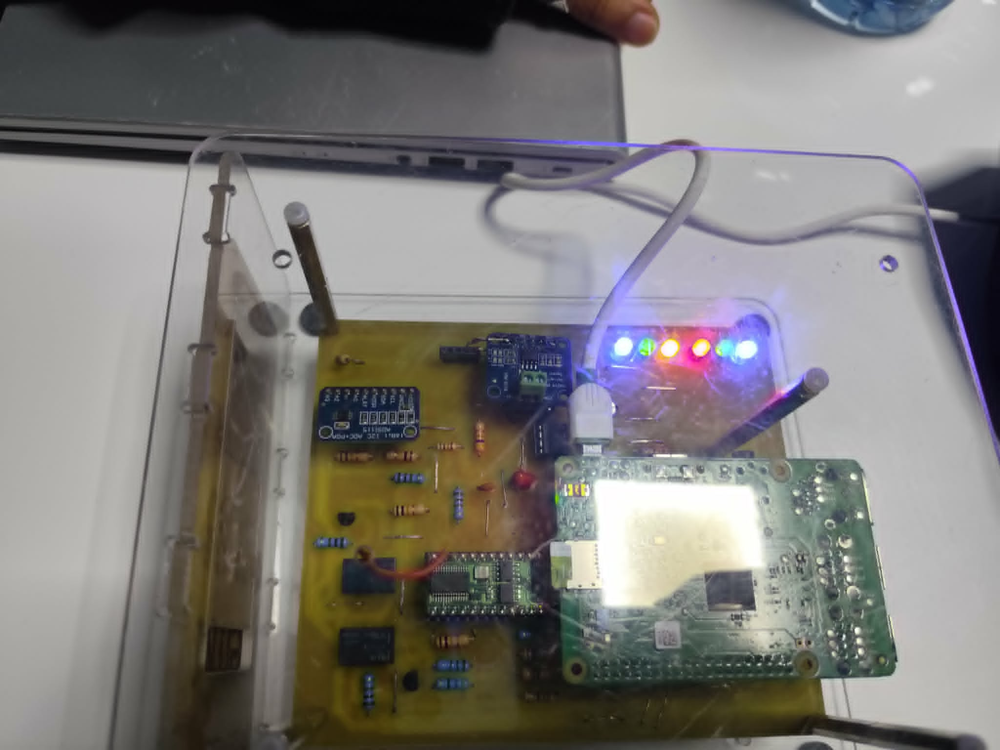
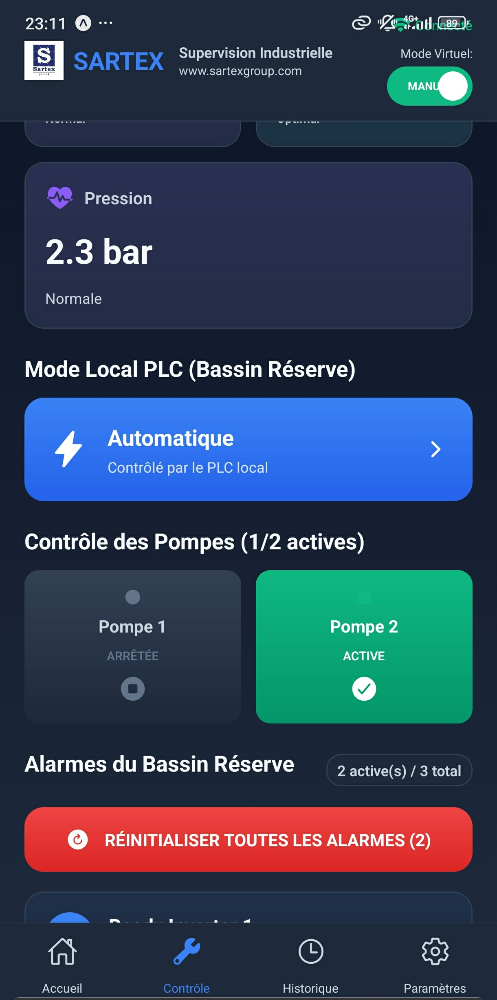
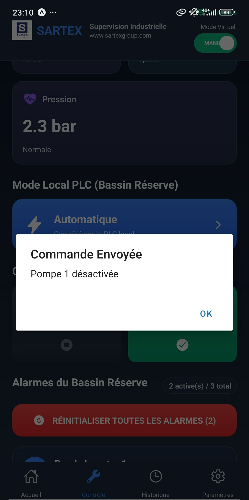
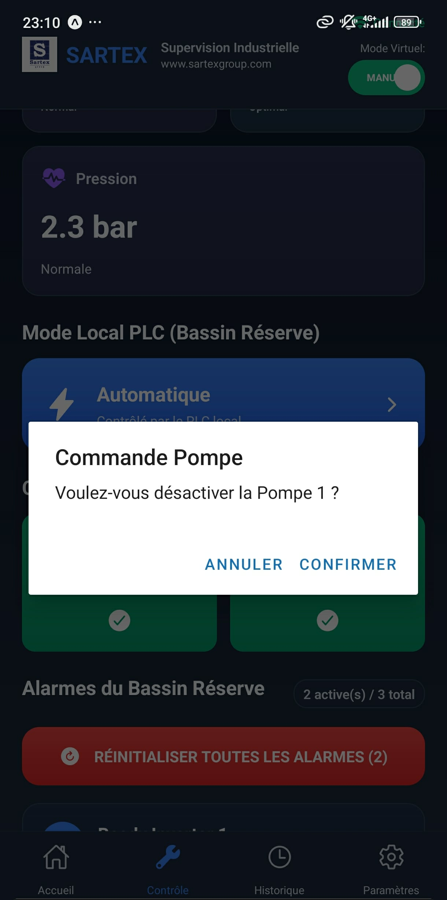
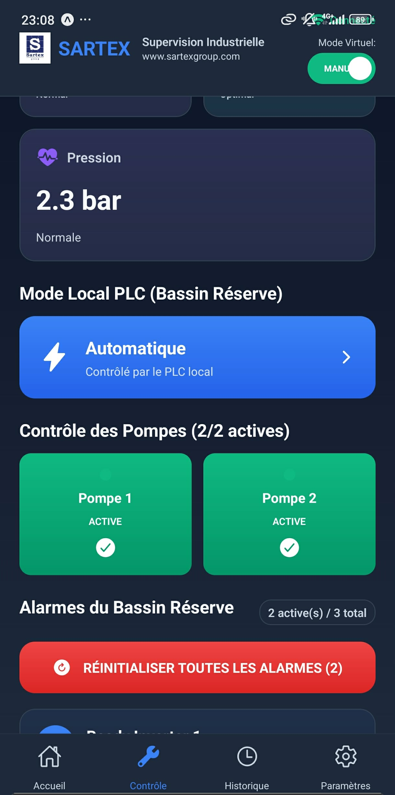
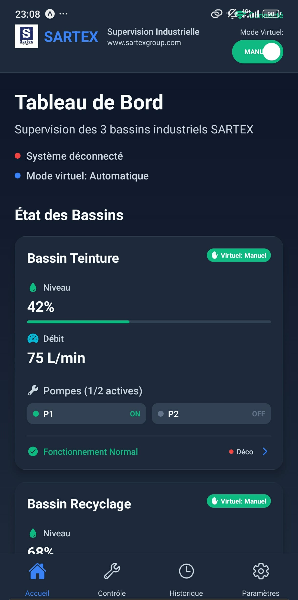
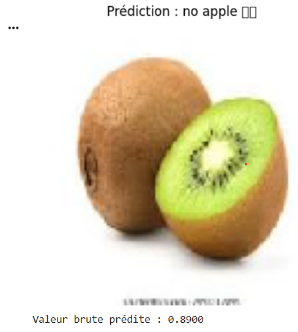
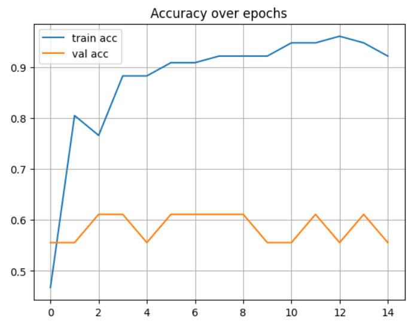
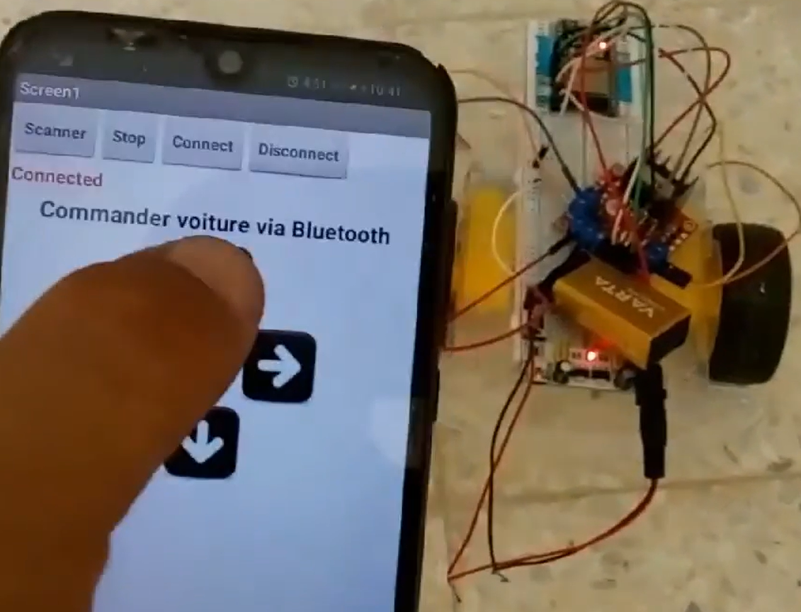

Ben Amor Roua
Vue d'ensemble
Ingénieure en Électronique Embarquée et Télécommunications (ESPRIT Monastir), spécialisée en systèmes embarqués, IoT, automatisation industrielle et intégration IA/ML, à la recherche de nouvelles opportunités professionnelles. Expérience concrète sur la chaîne complète d'un projet : conception électronique et routage PCB, contrôle embarqué, backend temps réel, applications web/mobile, et modèles de détection d'anomalies.
🎙️ Reconnaissance de Mots-Clés Embarquée par Deep Learning
Conception et déploiement d'un système de reconnaissance vocale embarquée sur STM32F746G-DISCO : un CNN entraîné sur le jeu de données Google Speech Commands reconnaît quatre commandes ("GO", "STOP", "YES", "NO") à partir de coefficients MFCC, avec retour visuel codé par couleur sur l'écran LCD intégré.
Pipeline complet : extraction MFCC → entraînement du modèle sous Google Colab (TensorFlow/Keras) → conversion TensorFlow Lite → déploiement sur Cortex-M7 via X-CUBE-AI, sans dépendance au cloud pour l'inférence.
Parcours en entreprise
Conception et implémentation d'un banc de test automatisé intelligent pour les interfaces FXS des passerelles résidentielles, combinant chaîne de mesure analogique, supervision temps réel et détection d'anomalies par IA — pour anticiper les dérives de production et réduire les coûts liés aux retours produits en usine.
- Conception de la chaîne de mesure analogique et réalisation du schéma électronique et du routage PCB, simulés et validés sous Proteus ISIS avant intégration matérielle.
- Contrôle embarqué sur Raspberry Pi et Basic Stamp 2, communication I2C et Telnet vers la passerelle Sagemcom.
- Serveur de gestion de la passerelle et backend Flask avec communication temps réel via Socket.IO.
- Frontend web et mobile (iOS/Android) en React Native, avec graphes de visualisation en temps réel.
- Base de données SQLite pour l'historisation des résultats de test.
- Développement d'un module de détection d'anomalies basé sur Isolation Forest pour identifier les dérives de production à partir de l'historique des mesures FXS.

Système de supervision IoT industriel pour le suivi en temps réel des bassins d'eau textile, avec intégration d'automates Delta et application web/mobile connectée.
- Backend Node.js assurant la communication Modbus TCP avec trois automates Delta.
- Programmation sous ISPSoft des trois automates, ajout de la commande HMI pour pilotage bidirectionnel.
- Interface web et mobile React Native pour la supervision et le contrôle à distance.
- Base de données SQLite et communication temps réel via WebSocket.
- Tests fonctionnels et validation de la communication automates ↔ application.






Système IoT complet pour la mesure et le contrôle en temps réel de la consommation énergétique, basé sur ESP32 et une application Flutter dédiée à l'affichage, l'historique et la gestion d'alertes.
- Prototype embarqué ESP32 avec capteurs de courant et de tension.
- Application Flutter pour l'affichage temps réel et l'historique de consommation.
- Système d'alerte automatique en cas de coupure d'énergie ou d'anomalie.
- Schéma électronique et routage PCB sous Altium Designer.

Découverte du domaine des télécommunications et des infrastructures réseau au sein du service technique : centres de données, points de distribution réseau, équipements de transmission et de commutation.
Projets & prototypes
Pipeline CI/CD — Déploiement Java avec Jenkins & Docker
Chaîne complète d'intégration et déploiement continu pour une application Java : build Maven, conteneurisation Docker, publication sur DockerHub, déploiement automatique par SSH sur serveur distant, déclenchement par webhook GitHub, et monitoring via Portainer.
Tourelle de Défense Autonome avec IA
Détection de présence humaine et réaction temps réel via actions automatisées ; reconnaissance faciale par apprentissage profond avec PiCamera.
Code privé
Détection de Panneaux Routiers Intelligent
Système temps réel de détection et classification de panneaux de signalisation par formes et couleurs, capture via PiCamera.
Voir sur GitHubSystème Domotique Intelligent
Solution domotique basée sur MQTT pour automatiser l'éclairage et les appareils connectés, serveur Node.js avec MongoDB et tableau de bord web interactif.
Code privéClassificateur d'Images CNN
Classificateur binaire d'images basé sur un réseau de neurones convolutifs, prédictions en temps réel sur flux d'images.


Stabilisateur de Caméra
Gimbal avec capteur MPU et servomoteurs pour corriger les mouvements brusques en temps réel ; structure conçue sous SolidWorks.
Code privéSurveillance de Santé IoT
Système de suivi des paramètres vitaux conçu pour transmettre les mesures d'un patient depuis un ESP32 vers un serveur web. Le projet résout le besoin de surveillance à distance grâce à la visualisation temps réel et aux alertes automatiques en cas de valeur anormale, tout en renforçant mes compétences en capteurs, communication réseau et traitement des données.
Code privéRobot Contrôlé par Bluetooth
Robot mobile conçu pour résoudre le pilotage simple et sans fil de deux moteurs depuis une application Android. L'ESP32 reçoit les commandes Bluetooth, tandis que le module L298N gère la puissance moteur et l'alimentation dédiée ; ce projet m'a permis de consolider l'intégration microcontrôleur, driver de moteurs et communication embarquée.

Pinout
🤖 Embedded & AI Engineering
🏭 Industrial IoT & Automation
💻 Software & Mobile
🔌 Electronics & PCB Design
🗄️ Data, DevOps & Delivery
🌐 Networking & Systems
Parcours académique
Attestations
- Applications de l'IA pour la Maintenance Prédictive — Institut NVIDIA de Deep Learning
- Fondamentaux de l'Industrie 4.0
- Programmation de Microcontrôleurs STM32